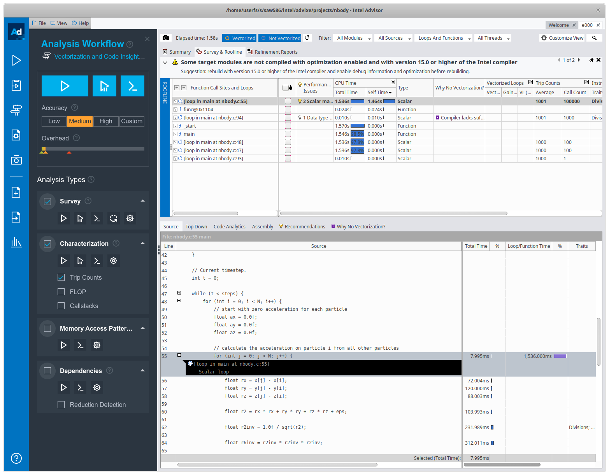
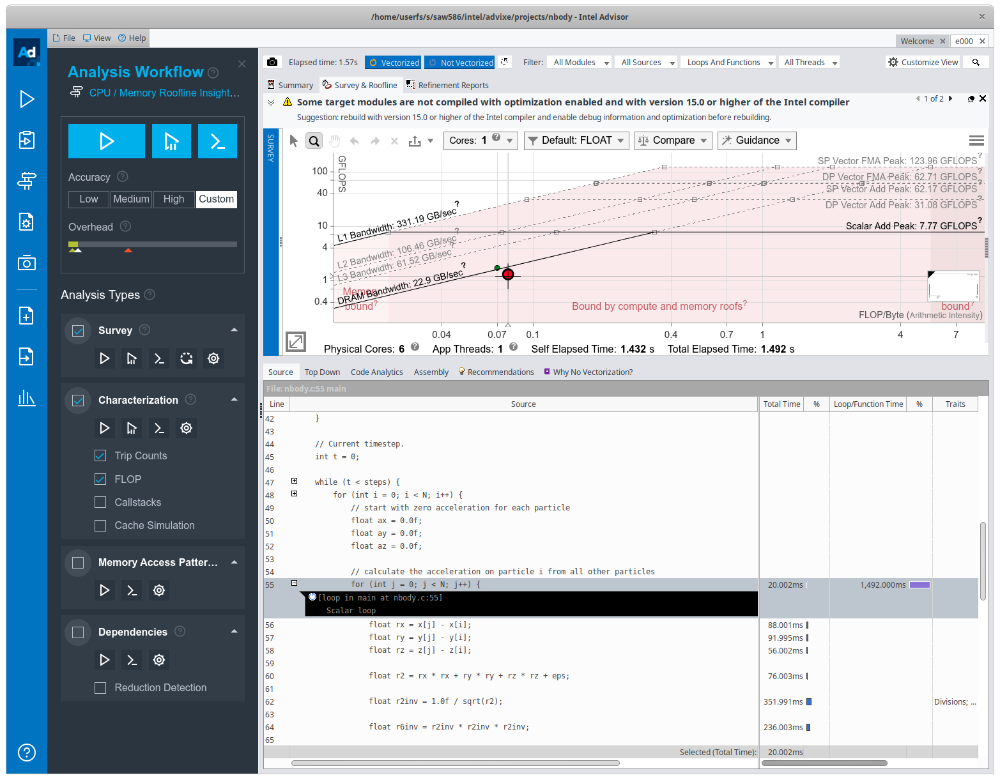

3. Basic Optimisation
Overview
Welcome to the third HIPC practical. Now that we’ve covered the basics of the C programming language, the remaining sessions will be a little different.
The remaining 8 weeks will be far less guided, instead focusing on a few simple applications that can be optimised and parallelised for a High Performance Computing platform.
You will be provided with some sample applications along with some exercises to complete that should mean applying the techniques found in the current teaching unit (or previous).
Good luck!
Exercise 1
Your first exercise is taken from the Introduction to High Performance Computing for Scientists and Engineers text book.
Given the following code, which optimisation strategies would you suggest? Write down a transformed version of the code which you expect to give the best performance.
double mat[N][N]; double s[N][N]; int v[N]; // fill v and s for (int j = 0; j < N; j++) { for (int i = 0; i < N; i++) { double val = fmod(v[i], 256); mat[i][j] = s[i][j] * (sin(val) * sin(val) - cos(val) * cos(val)); } }No assumptions about the size of
Nmay be made. You may, however, assume that the code is part of a subroutine which gets called very frequently.sandvmay change between calls, and all elements ofvare positive.Note: The code here has been translated from Fortran to C (along with some associated changes). You can find an answer to this problem on page 294 of the text book.
Spheres
Attached File: spheres.c
Here is some code that creates a number of spheres (specified on the command line) and then calculates some information about the spheres, outputting a table of results to the screen at the end.
#include <stdio.h>
#include <math.h>
#include <stdlib.h>
#define MAX_RAND 10000
struct sphere_t {
double x;
double y;
double z;
double r;
};
double random_number() {
// returns a random floating point number between 0.0 and MAX_RAND
return fmod(rand() * ((double) rand() / RAND_MAX), MAX_RAND);
}
int main(int argc, char *argv[]) {
// read N from the first command line argument
int N = atoi(argv[1]);
struct sphere_t * sphere = malloc(sizeof(struct sphere_t) * N);
// fill with random numbers
for (int i = 0; i < N; i++) {
sphere[i].x = random_number();
sphere[i].y = random_number();
sphere[i].z = random_number();
sphere[i].r = random_number() / 4.0;
}
// calculate areas
double * area = calloc(N, sizeof(double));
for (int i = 0; i < N; i++) {
area[i] = 4.0 * M_PI * pow(sphere[i].r, 2.0);
}
// calculate volume
double * volume = calloc(N, sizeof(double));
for (int i = 0; i < N; i++) {
volume[i] = (4.0 / 3.0) * M_PI * pow(sphere[i].r, 3.0);
}
// calculate the number of spheres each sphere intersects
int * intersects = calloc(N, sizeof(int));
for (int i = 0; i < N; i++) {
for (int j = 0; j < N; j++) {
if (i == j) continue; // same circle
// calculate distance between two spheres
double d = sqrt(pow(sphere[j].x - sphere[i].x, 2.0) + pow(sphere[j].y - sphere[i].y, 2.0) + pow(sphere[j].z - sphere[i].z, 2.0));
// if the distance is less than the sum of the radii, they intersect
if (d < (sphere[j].r + sphere[i].r)) intersects[i]++;
}
}
// print out all information to the screen (consider piping this to a file)
printf("x, y, z, r, area, volume, intersects\n");
for (int i = 0; i < N; i++) {
printf("%lf, %lf, %lf, %lf, %lf, %lf, %d\n", sphere[i].x, sphere[i].y, sphere[i].z, sphere[i].r, area[i], volume[i], intersects[i]);
}
}
You can compile it with:
$ gcc -O0 spheres.c -o spheres -lm
And you can run the code (for 10000 spheres) with:
$ ./spheres 10000
Read through the code and make sure you understand what it’s doing.
For now, we’re going to disable compiler optimisations, so make sure you keep -O0 throughout the following exercises.
Exercise 2
Instrument the
spheres.ccode with appropriate timers (or counters (or both!)). You can implement the timers any way you wish, and you can choose how to display the timers results.Tip: At the moment, the spheres code outputs its information to standard out, so you might like to print your timing results to standard error (using
fprintf(stderr, "...", ...)). You can then use pipes to hide information you don’t want, e.g. (to send standard output to/dev/null, and standard error to a file)$ ./spheres 10000 1>/dev/null 2>timing_output.txt
Exercise 3
Review the simple optimisation strategies in Unit 4 and see which methods can be applied to the spheres code.
Optimise the code and review the performance improvement you can get from each optimisation method. Explore how the improvements vary with parameters (i.e. more spheres, less spheres).
Using Intel Advisor
Intel Advisor is available on the departmental machines. You can use it to perform roofline analysis of your code, or you can use it to provide advice on vectorisation.
You can start the Advisor GUI by first ‘sourcing’ the setvars script, and then launching the GUI like so:
$ source /opt/york/cs/net/intel-oneapi-2022-x86_64-1/setvars.sh
$ advisor-gui
You should be greeted by a screen like so:
Figure 1: Intel Advisor Opening Screen
Creating a Project
You can create a project by using the “Create Project” button, and then giving your project a name. So, for example, to create a project around the nbody code from this practical:
Figure 2: Creating a project in Intel Advisor
In the project properties, you should find the compiler’s binary and select that as the application.
Note: You will need to compile your application with debug symbols (i.e. -g)
You can provide some arguments to the application in the parameters field. So for the nbody code, with 1000 particles for 100 time steps:
Figure 3: Providing application parameters
Perform Some Analysis
If you’d like to see vectorisation hints and code analysis, choose the Vectorization and Code Insights function.
Figure 4: Vectorization and Code Insights
From here you can run the analysis with varying levels of accuracy and see a report on the timing of various functions and loops, along with hints on where vectorisation has and hasn’t been applied, or how your code can be changed to improve performance or vectorisation.
Figure 5: Analysis workflow, choosing accuracy level

Figure 6: Code profiling information
Perform Roofline Analysis
You can also perform a Roofline Analysis by choosing the CPU / Memory Roofline Insights option above. You will need to collect Trip Counts and FLOP characterisations and it will plot the various rooflines, along with where your code sits in that space. This will aid your search for optimisations, and whether you should pursue memory optimisations or compute optimisations.

Figure 7: Performing a Roofline Analysis in Intel Advisor
Exercise 4
Use Intel Advisor to analyse the spheres code.
Analyse the original code and executable, and then analyse your optimised version of the code.
Generate a roofline plot of each. What insights can you gather from this analysis?